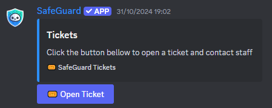
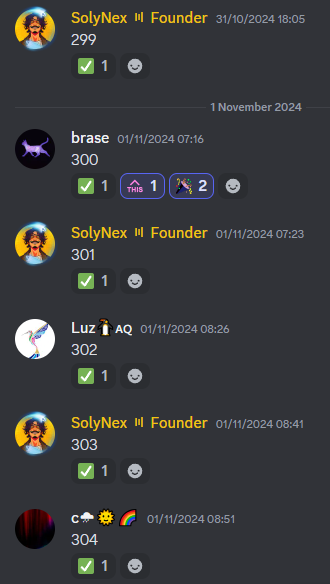
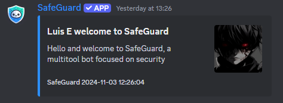
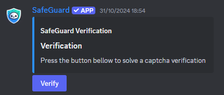

SafeGuard is a Discord bot designed to protect and enhance your server's security. From automated verification to prevent bot raids to scanning for known scammers, SafeGuard offers a suite of tools to keep your community safe and engaging.
The bot is easy to set up and customizable, allowing you to select features that best suit your server's needs. Beyond security, SafeGuard includes features to manage tickets, set up counting games, welcome new members, and more. This documentation will guide you through SafeGuard’s setup and use, so you can maximize its potential for your community.
To get started with SafeGuard:
1. Invite SafeGuard to Your Server: Use the bot's invite link and grant it the necessary permissions.
2. Start server setup: Do /setup-wizard and go through the guide. It will help you set up all the necessary information for the bot to work as intended.
Access a panel with all necessary moderation tools in one place.
View server statistics and performance insights.
Add or remove links from the whitelist, allowing certain URLs in your server.
Lock or unlock a channel to control whether members can send messages.
Set all channels to read-only, pause verification, and remove team members temporarily during a server lockdown.
Manage team settings and codes, allowing control over team permissions and access.
View all existing team codes for access control and management.
Scan your server for any users flagged in the SafeGuard scammer database.
Set up a ticket system for members to create private support tickets.
Configure verification settings to protect your server from bots and suspicious accounts.
Set a counting channel for members to engage in a counting game.
Assign a default role to new members automatically upon joining the server.
Host a giveaway, allowing members to participate for a chance to win prizes.
Retrieve information on a specific user, including any scam-related flags.
Get all information on how to use SafeGuard.
Get all the bot's invite link.
Get bots host server status and latency.
To set up a ticket system, use the /ticketsystem-setup command. This feature allows members to open private support tickets that only staff can view. Here's how to set it up:
1. Run /ticketsystem-setup and select the channel and category you want to use for ticketing.
2. Ticket panel has now appeared in the chosen channel.
SafeGuard’s counting game encourages member engagement through a simple number-counting challenge. To set it up:
1. Run /counting-setup and select the channel you want to use for counting.
2. Users can now count in the channel you chose.
Autorole allows new members to receive a role automatically upon joining. To set it up:
1. Run /autorole-setup and specify the role you wish to assign.
2. Every new user will now have the role you specified.
SafeGuard can welcome new members with a custom message, making your server feel more inviting. Here’s how to set it up:
1. Use /welcomer-setup and select the welcome channel.
2. Enter the welcome message.
3. Everytime someone joines your server a welcome message will be sent.
Verification helps prevent bots and spammers from entering your server by adding an additional verification layer. To set it up:
1. Run /verification-setup and select a verification method.
2. Customize what happens upon verification completion, such as assigning a specific role or removing a spesific role.
3. Once set, new members must verify themselves before gaining full access, protecting your server from potential bot raids.
Server Scanning: Use /scan-server to check your members against SafeGuard’s scammer database, flagging any accounts associated with known scammers.
/user-lookup: Check specific users to see if they’re on the scammer database, helping you vet new or suspicious members.
-----------------------------------------------------------------------------------------
Version 1.0.0 - not happened yet
-----------------------------------------------------------------------------------------
- SafeGuard public release.